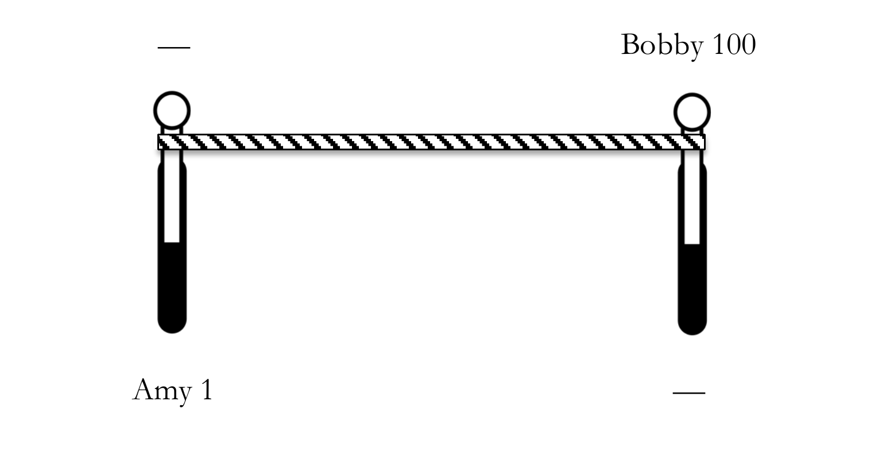
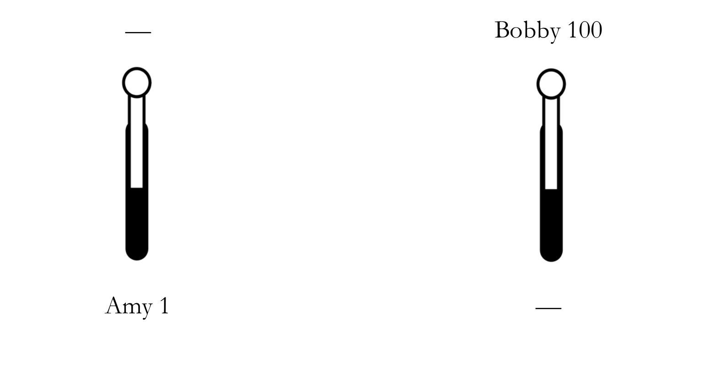

A Non-Identity Dilemma for Person-Affecting Views
Abstract
Person-affecting views state that (in cases where all else is equal) we’re permitted but not required to create people who would enjoy good lives. In this paper, I present an argument against every possible variety of person-affecting view. The argument is a dilemma over trilemmas. Narrow person-affecting views imply a trilemma in a case that I call ‘Expanded Non-Identity.’ Wide person-affecting views imply a trilemma in a case that I call ‘Two-Shot Non-Identity.’ One plausible practical upshot of my argument is as follows: we individuals and our governments should be doing more to reduce the risk of human extinction this century.
1. Introduction
My subject is person-affecting views in population ethics. As is custom, I begin with:
Narveson’s Slogan
We are in favor of making people happy, but neutral about making happy people. (Narveson 1973, 80)
I’ll take a deontic version of the latter clause to define ‘person-affecting views.’ Person-affecting views are those views that imply the:
Deontic Principle of Neutrality
In cases where all else is equal, we’re permitted but not required to create people who would enjoy good lives.This principle is one half of the famous Procreation Asymmetry in population ethics (for which see McMahan 1981, 100; Holtug 2004; Roberts 2011a; 2011b; Chappell 2017; Frick 2017; 2020; Bader 2022; Thomas 2023; Thornley 2023; Francis, n.d.). The other half of the Procreation Asymmetry states that, in cases where all else is equal, we’re required not to create people who would suffer bad lives.
Intuitions about person-affecting views run both ways. These views seem less appealing when we note that future good lives could contain all the things that make our own lives valuable: joy, knowledge, achievement, loving relationships, and so on (Kavka 1978, 195–96). But person-affecting views seem more appealing when we instead note the following: if we decline to create a person who would enjoy a good life (in cases where all else is equal), then no existing person is worse off (Govier 1979, 111; Hare 2007, 498). From this perspective, declining to create a person looks like a victimless crime, which may lead us to believe that it is no crime at all.
Many of us feel the force of both of these intuitions. Other philosophers find one intuition compelling and the other unconvincing. Unfortunately, these other philosophers disagree about which intuition is which. Since these initial intuitions are a wash, we have to look at the arguments.
In this paper, I argue against person-affecting views. Arguments against these views have been given before, but most are tailored to the details of specific theories.See, for example, Beckstead (2013, chap. 4), Ross (2015), Greaves (2017), Horton (2021), Thomas (2023), Thornley (2023), and Arrhenius (forthcoming, chap. 10). One exception is Thornley (forthcoming). New variants of person-affecting views emerge unscathed. Other arguments employ premises that advocates of person-affecting views have proven happy to reject. The most famous argument against person-affecting views is a case in point. It begins with two claims common to such views:
Existence Anticomparativism
Existing can’t be better for a person than not existing.
The Person-Affecting Restriction
One outcome can’t be better than another unless it’s better for some person.
These claims together imply that creating a person with a wonderful life is no better than creating a different person with a barely good life. It is not better for the person with the wonderful life (by Existence Anticomparativism) nor is it better for anyone else, and so it is not better simpliciter (by the Person-Affecting Restriction). That suggests (counterintuitively to many) that we are permitted to create a person with a barely good life rather than a different person with a wonderful life.
This non-identity problem (Parfit 1984, chap. 16) has long been considered the most serious objection to person-affecting views, but two developments cast doubt on its significance. The first is the growing number of philosophers who accept narrow person-affecting views’ supposedly-unacceptable verdict that creating the person with the barely good life is permissible (Heyd 2009; Roberts 2011b; Boonin 2014; McDermott 2019; Mogensen 2019; Horton 2021; Podgorski 2021; Spencer 2021). The second is the construction of wide person-affecting views which avoid the verdict (Hare 2007; Meacham 2012; Parfit 2017; Frick 2020).
In response to these developments, I present a dilemma for person-affecting views that builds on the non-identity problem. The first horn is a trilemma for narrow views centred on a case that I call ‘Expanded Non-Identity.’ The second horn is a trilemma for wide views centred on a case that I call ‘Two-Shot Non-Identity.’ This dilemma-over-trilemmas tells against every possible variety of person-affecting view.
Now for one plausible practical upshot of my argument. There’s a risk that humanity goes extinct this century, and it’s widely agreed that the interests of existing people give us some reason to reduce this risk (Shulman and Thornley forthcoming). But if person-affecting views are false, then some non-person-affecting view in population ethics must be true, and many of these latter views imply that the prospect of happy future generations gives us additional reason to reduce the risk of human extinction this century (see, for example, Greaves 2017; Greaves and Ord 2017, sec. 4.4; Mogensen 2021, sec. 2). And since there could well be a lot of future generations enjoying very good lives, many of these views imply that this additional reason is strong (Tarsney and Thomas 2020; Greaves and MacAskill 2021; Greaves, MacAskill, and Thornley 2021). That in turn suggests that we individuals and our governments should be doing more to reduce the risk of human extinction this century.
2. The Dilemma
Recall that I’m defining ‘person-affecting views’ as those views that imply the:
Deontic Principle of Neutrality
In cases where all else is equal, we’re permitted but not required to create people who would enjoy good lives.
The Deontic Principle of Neutrality implies that we’re permitted to choose either option in the following case:
Just Bobby
Bobby 100
—
Here option (1) is creating Bobby with a wonderful life, represented by a welfare level of 100. Option (2) is creating no one, represented by the ‘—’. The Deontic Principle of Neutrality implies that each of (1) and (2) is permissible.
In this paper, I present a dilemma for person-affecting views. To see the two horns, consider the following case:
Non-Identity
Amy 1
Bobby 100
Here option (1) is creating Amy with a life that is just barely good at welfare level 1. Option (2) is creating Bobby with a wonderful life at welfare level 100. We can divide person-affecting views into two classes based on their verdicts in cases like Non-Identity: cases in which we must either create a person with a good life or create a different person with a better life. The first class is:
Narrow person-affecting views
Those person-affecting views that imply that we’re permitted to create the worse-off person in cases like Non-Identity.
And the second class is:
Wide person-affecting views
Those person-affecting views that imply that we’re required to create the better-off person in cases like Non-Identity.The ‘narrow’ and ‘wide’ terminology comes from Parfit (1984, chap. 18). My use matches that of Thomas (2023, 490).
I argue that each class of person-affecting view faces a trilemma.
3. The Trilemma for Narrow Views
The defining verdict of narrow views might seem implausible, but many philosophers have made peace with it.See, for example, Heyd 2009; Roberts 2011b; Boonin 2014; McDermott 2019; Mogensen 2019; Horton 2021; Podgorski 2021; Spencer 2021. Pummer’s (2024) view is narrow in some contexts and wide in others. I now present a harder problem for narrow views. Consider:
Expanded Non-Identity
Amy 1
Bobby 100
Amy 10, Bobby 10
Here I’ve added a third option to Non-Identity. The first two options are as before: create Amy with a barely good life at welfare level 1 or create Bobby with a wonderful life at welfare level 100. The new third option is to create both Amy and Bobby with mediocre lives at welfare level 10.
Narrow views imply that each of (1) and (2) is permissible when these are the only available options. What should they say when (3) is also an option? I’ll argue that they must say at least one of three implausible things, so that narrow views face a trilemma.
3.1. Option (1) Remains Permissible
The first thing they could say is that option (1) — creating Amy with a barely good life at welfare level 1 — remains permissible when we move from Non-Identity to Expanded Non-Identity.Horton’s (2021) view has this implication. See Thornley (2023, sec. 4). But that claim implies:
Permissible to Choose Dominated Options
There are option sets in which we’re permitted to choose some option
even though there’s some other available option that dominates . That is to say, (i) everyone in is better off in , (ii) everyone who exists in but not has a good life, and (iii) is perfectly equal.
That’s because (3) dominates (1): (3) creates only people with good lives, it leads to perfect equality, and it’s better than (1) for Amy: the only person who exists in (1).
Permissible to Choose Dominated Options seems implausible. I think it’s so implausible that we should reject any view that implies it. But a possible response goes like this: although it would be implausible to claim that (1) is permissible in a straight choice between (1) and (3), it’s not so implausible to claim that (1) is permissible in Expanded Non-Identity where (2) is also an option. In cases where (2) is also an option, (3) harms Bobby because he’s better off in (2). So although (3) dominates (1), it’s permissible to choose (1) in Expanded Non-Identity, because (3) harms Bobby in Expanded Non-Identity.
I find this argument unconvincing. (3) harms Bobby in a technical sense of the word ‘harm,’ according to which a person is harmed if and only if this person is worse off than they could have been.See Roberts (2011b, 337), Meacham (2012, 260), McDermott (2019, 437), and Thomas (2023, 473). But this technical sense of the word ‘harm’ differs significantly from our ordinary sense of the word, as is made clear by the following example.Erik Carlson put it to me in conversation. Suppose that I could give a total stranger £0, £10 or £11. In the technical sense, I’d harm this stranger if I gave them £10 (since I’d leave them worse off than they could have been), but I wouldn’t harm them in the ordinary sense of the word.
Much the same goes for Bobby in (3). His life in (3) could be a life of moderate happiness with little suffering. In that case, (3) wouldn’t harm him in the ordinary sense of the word. (3) harms Bobby only in the technical sense: Bobby is worse off in (3) than he is in (2). This technical kind of harm gives us reason to choose (2) over (3), but it gives us no reason to choose (1) over (3). After all, Bobby enjoys a good life in (3) and in (1) he doesn’t exist at all.Supposing that we have reason to choose (1) over (3) leads to what Ross calls ‘the Problem of Improvable-Life Avoidance’: ‘we have... reason to prefer outcomes in which a given person does not exist to outcomes in which this person exists and has an improvable life.’ (2015, 443). And even if technical harm did give us some reason to choose (1), we’d have to weigh this reason against our reason not to choose (1): (1) is worse for Amy than (3) and it brings about much less welfare than each of (2) and (3). Imagine the conversation you might have with Amy after choosing (1):
Amy: Why did you make me worse off than I could have been?
You: Because to make you better off, I would have had to create another person with a good life.
Amy: What’s wrong with that?
You: I had a third option: making this person’s life even better.
Of course, choosing (3) might lead to a similar conversation with Bobby:
Bobby: Why did you make me worse off than I could have been?
But here your response is: ‘Because to make you better off, I would have had to not create Amy.’ Arguably, this justification is at least a little more convincing. But if you’re not convinced, then the right conclusion to draw is not that (1) and (3) are both permissible. It’s that only (2) is permissible.I think this verdict is the correct one. As we’ll see in section 3.3, it leads to trouble when coupled up with any narrow view. So, I contend, the verdict that (1) is permissible in Expanded Non-Identity remains seriously implausible.
In what follows, I’ll resume using ‘harm’ in the technical sense that’s become standard in population ethics, but readers should keep in mind that technical harms need not be ordinary harms. I think my arguments are compelling even given this proviso.
3.2. Option (3) is Permissible
Here’s a second thing that narrow views could say about Expanded Non-Identity: option (3) — creating Amy and Bobby with mediocre lives at welfare level 10 — is permissible.Podgorski’s (2021) view has this implication. See Thornley (2023, sec. 6). But that claim implies:
Permissible to Do Serious Harm for Mediocre Creation:
There are option sets in which we’re permitted to choose some option
even though — relative to some other available option — all does is seriously harm one person and create another person with a mediocre life.
That’s because (3) is mediocre for Amy and much worse than (2) for Bobby: Bobby’s welfare level is 100 in (2) and 10 in (3). And we can imagine variations on Expanded Non-Identity in which Bobby’s welfare level in (2) is arbitrarily high. The higher Bobby’s welfare level in (2), the less plausible it is to claim that we’re permitted to choose (3).
Here's another point to consider. One objection often made to non-person-affecting views in population ethics is that these views will sometimes countenance making particular people worse off in order to create more people. But if a narrow person-affecting view says that (3) is permissible in Expanded Non-Identity, this view is very permissive about making particular people worse off in order to create more people. It permits us to create Bobby with welfare level 10 rather than welfare level 100 in order to also create Amy at welfare level 10. The narrow view in question is more permissive in this respect than even total utilitarianism. On total utilitarianism, choosing (3) is wrong because (2) leads to greater total welfare.
Here's another argument that choosing (3) is wrong: choosing (3) would certainly be wrong in a straight choice between (2) and (3), and adding (1) as an option can’t make (3) permissible.In other work, I’ve called the negation of this last claim ‘the Problem of Impairable-Life Acceptance’ (Thornley 2023, sec. 6). Imagine the conversation you might have with Bobby after choosing (3):
Bobby: Why did you seriously harm me? Why did you make me much worse off than I could have been?
You: Because doing so allowed me to create Amy.
Bobby: That doesn’t sound very person-affecting of you. Oh well, at least Amy’s life must be very good.
You: Oh, it’s mediocre actually.
Bobby: What! How can it be permissible to seriously harm me in order to create Amy with a mediocre life?
You: Well, you see, I had another option: creating Amy with an even more mediocre life.
A possible response goes like this: the availability of (1) does make a difference, but not because Amy is worse off in (1) than in (3). The availability of (1) makes a difference because Bobby doesn’t exist in (1). When (1) is available, Bobby’s existence is contingent on your choice, so it’s permissible to make Bobby’s life much worse by choosing (3) rather than (2).
A superficial similarity with narrow views’ verdict in Non-Identity might make this claim seem defensible. But the case at hand isn’t so much a non-identity problem as it is an identity non-problem. It’s morally important not to make particular people worse off, even if you also have the option not to create them at all. So, I conclude, it’s implausible to say that (3) is permissible in Expanded Non-Identity.
3.3. Only Option (2) is Permissible
Now we can complete the trilemma for narrow views. If neither of (1) and (3) is permissible in Expanded Non-Identity, it must be that only (2) is permissible.Spencer’s (2021) view has this implication. But if only (2) is permissible, then narrow views imply:
Losers Can Dislodge Winners:
Adding some option
to an option set can make it wrong to choose a previously-permissible option , even though choosing is itself wrong in the resulting option set.This condition is the negation of Podgorski’s (2021, 362) Losers Can’t Dislodge Winners.
That’s because narrow views imply that each of (1) and (2) is permissible in Non-Identity. So if only (2) is permissible in Expanded Non-Identity, then adding (3) to our option set has made it wrong to choose (1) even though choosing (3) is itself wrong in Expanded Non-Identity.
That’s a peculiar implication. It’s a deontic version of an old anecdote about the philosopher Sidney Morgenbesser (Poundstone 2008, 50). Here’s how that story goes. Morgenbesser is offered a choice between apple pie and blueberry pie, and he orders the apple. Shortly after, the waiter returns to say that cherry pie is also an option, to which Morgenbesser replies, ‘In that case, I’ll have the blueberry.’
That’s a strange pattern of preferences. The pattern is even stranger in our deontic case. Imagine instead that the waiter is offering Morgenbesser the options in Expanded Non-Identity.It’s a very unusual restaurant. Initially the choice is between (1) and (2), and Morgenbesser permissibly opts for (1). Then the waiter returns to say that (3) is also an option, to which Morgenbesser replies, ‘In that case, I’m morally required to switch to (2).’ The upshot is that the waiter can force Morgenbesser’s hand by adding options that are wrong to choose in the resulting option set. And turning the case around, the waiter could expand Morgenbesser’s menu of permissible options by taking wrong options off the table. That seems implausible.
One might reply that advocates of person-affecting views already accept this kind of expansion inconsistency. Any downside here is already priced in. But this claim is incorrect: this is not your grandfather’s expansion inconsistency. It’s well-known that person-affecting views violate Sen’s (2017, 63) Beta, which says that adding an option to an option set can’t make just one of two previously-permissible options wrong. But Losers Can Dislodge Winners is notably stronger (and stranger) than the mere negation of Beta. Beta violations can be defended on the grounds that they arise wherever the betterness relation is incomplete.At least so long as we accept maximality: the claim that choosing an option is permissible if and only if it’s not worse than any other available option.Here’s an example of incompleteness inducing a Beta violation. Mint ice cream is worse than mint choc chip, and both are incommensurable with pistachio. Given these facts, choosing mint becomes wrong once mint choc chip is added to your option set, but choosing pistachio remains permissible. No such defence is available for Losers Can Dislodge Winners.
An alternative reply channels Evelyn Waugh, who writes in Brideshead Revisited that “To understand all is to forgive all” (1945, 25). The reply submits that Waugh’s sentiment applies to Losers Can Dislodge Winners. It won’t seem so unforgivable once we understand why the relevant person-affecting views imply it: choosing (3) is wrong because it’s much worse than (2) for Bobby, and adding (3) makes choosing (1) wrong because the availability of (3) means that (1) harms Amy.Thanks to Jonas H. Aaron for this point.
I find this explanation unconvincing. It claims that it’s for Amy’s sake that Morgenbesser must switch from (1) to (2) when (3) is introduced. But (2) is no better for Amy than (1). Amy enjoys a good life in (1), and in (2) she lives no life at all. And as we’ve seen above, (1) need not harm Amy in any ordinary sense of the word. (1) must harm Amy only in the technical sense: she’s better off in (3) than in (1). This fact gives Morgenbesser some reason to switch from (1) to (3). It gives Morgenbesser no reason to switch from (1) to (2).
What’s more, claiming that it’s for Amy’s sake that Morgenbesser must switch from (1) to (2) leads to what Horton calls ‘the problem of backfiring complaints’ (2021, 490): the implication that people’s complaints can backfire, making it wrong to create them even though they would enjoy good lives. In this case, it’s the introduction of (3) — an option that is better for Amy — that makes it wrong to create Amy at all.Here’s another issue. Those who claim that adding (3) makes choosing (1) wrong because the availability of (3) means that (1) harms Amy. seem committed to the following claims:The fact that a person would be harmed in an outcome gives us reason not to choose that outcome.The fact that a person would enjoy a good life in an outcome gives us no reason to choose that outcome.But these two claims together give rise to a problem. Meacham (2012, 281) calls the case ‘Asymmetric Creation.’ Horton (2021, 490) presents a similar case: (1*) — (2*) Amy 99, Bobby 100 (3*) Amy 100, Bobby 99 Given claim (ii) above, Amy’s and Bobby’s good lives in (2*) and (3*) give us no reason to choose (2*) or (3*) over (1*). But given claim (i), the fact that Amy is harmed in (2*) — because she’s better off in (3*) — gives us reason to choose (1*) over (2*). And the fact that Bobby is harmed in (3*) — because he’s better off in (2*) — gives us reason to choose (1*) over (3*). So given claims (i) and (ii), we have reason to choose (1*) over (2*) and (3*), and we have no reason to choose (2*) or (3*) over (1*). Given a plausible principle linking reasons and obligations, we’re then required to choose (1*). That verdict seems undesirable.What’s more, the verdict might seem even less desirable once we observe that cases of this kind are realistic and somewhat common. Arguably, anyone who finds themselves in the early stages of a pregnancy with twins is in the relevant situation. If you terminate the pregnancy early, Amy and Bobby will never exist. You’d thereby choose (1*). If you have the twins, you’ll have to make some choice about how to divide your time, money, and attention between them. This choice will almost certainly have some effect on their welfare, making your choice of division akin to a choice between (2*) and (3*). And even a perfect 50-50 split of time, money, and attention will harm each twin in the relevant sense, because you could have made each twin better off by skewing the split their way.So if we want to avoid the verdict that having twins is wrong, we should reject views that are committed to claims (i) and (ii). That in turn should make us wary of the claim at the start of this footnote: adding (3) makes choosing (1) wrong because the availability of (3) means that (1) harms Amy.
So it’s implausible to claim that Morgenbesser is required to switch from (1) to (2) for Amy’s sake. For whose sake is he required to switch? Not Bobby’s. If Morgenbesser were required to choose (2) for Bobby’s sake in Expanded Non-Identity, he’d presumably also be required to choose (2) for Bobby’s sake in Non-Identity, contrary to the defining verdict of narrow views.
Thus the narrow person-affecting views in question seem forced to say that we’re required to choose (2) for no one’s sake, and then it’s debatable whether they’re still worthy of the name: person-affecting views were supposed to avoid this air of impersonality. What’s more, a question remains to be answered: if we’re required to choose (2) for no one’s sake in Expanded Non-Identity, why aren’t we also required to choose (2) for no one’s sake in Non-Identity? A natural explanation of the antecedent is that (2) is the best option in Expanded Non-Identity: it leads to the most of what makes life good and the least of what makes life bad (or at least: it leads to the best balance of these things). But this explanation also suggests that (2) is the best option in Non-Identity and thereby suggests that narrow views’ defining verdict is false. The overarching lesson is that Losers Can Dislodge Winners remains implausible.
3.4. Summarising the Trilemma for Narrow Views
Now the trilemma for narrow person-affecting views is complete and I can summarise. If these views say that (1) is permissible in Expanded Non-Identity, they imply that it’s Permissible to Choose Dominated Options. If they say that (3) is permissible, they imply that it’s Permissible to Do Serious Harm for Mediocre Creation. And if they say that only (2) is permissible, they imply Losers Can Dislodge Winners. Each of these implications is implausible.The trilemma also has the virtue of being adjustable. We can make it harder to believe that (1) is permissible by increasing the welfare levels of Amy and Bobby in (3). For example, we could have option (3) be creating both Amy and Bobby with decent lives at welfare level 20 (rather than mediocre lives at welfare level 10). Or we can make it harder to believe that (3) is permissible by decreasing the welfare levels of Amy and Bobby in (3). For example, we could have option (3) be creating both Amy and Bobby with just-better-than-barely-good lives at welfare level 2.We can also make it harder to believe that certain options are permissible by adding colour to the case. Our intuitions sometimes vary depending on whether welfare-decreases come about as a result of removing good things or as a result of adding bad things, and we can use this fact. For example, it will seem especially implausible to claim that (1) is permissible if Amy’s life in (1) is exactly like her life in (3) except with enough suffering tacked on at the end to bring her welfare level down from 10 to 1. And it will seem especially implausible to claim that (3) is permissible if Bobby’s life in (3) is exactly like his life in (1) except with enough suffering tacked on at the end to bring his welfare level down from 100 to 10.So if you find yourself thinking that (1) is much more plausibly permissible than (3) or vice versa, you should adjust the trilemma in the aforementioned ways, so as to make (1) and (3) seem equally (im)plausibly permissible. You thereby make the trilemma maximally challenging for narrow person-affecting views.
This trilemma for narrow views is the first horn of the dilemma for person-affecting views as a whole. The other horn is a trilemma for wide person-affecting views.
4. The Trilemma for Wide Views
Recall:
Wide person-affecting views
Those person-affecting views that imply that we are required to create the better-off person in cases like Non-Identity.
Wide views imply that only (2) is permissible in Non-Identity and so avoid the trilemma above: they can say that only (2) is permissible in Expanded Non-Identity without implying Losers Can Dislodge Winners. However, wide views imply a different trilemma. To see how, consider first:
One-Shot Non-Identity

This case is a cosmetic variation of Non-Identity in which Amy’s and Bobby’s existence will be determined by the positions of two levers. By leaving the left lever up, we decline to create Amy. By pulling the left lever down, we create her at welfare level 1. By leaving the right lever up, we create Bobby at welfare level 100. By pulling the right lever down, we decline to create him. Crucially, the levers are lashed together, so our only options are pulling both levers or pulling neither. Wide views thus imply that pulling both levers is wrong. After all, pulling both levers means creating Amy at welfare level 1 and declining to create Bobby at welfare level 100.
Now consider:
Two-Shot Non-Identity

In this case, the levers are no longer lashed together. We first decide whether to pull the first lever, lock that choice in, and then decide whether to pull the second lever.Spencer (2021, 3837–38) briefly considers a similar case. He argues from the Procreation Asymmetry, an agglomeration principle, and a variant of Sen’s (2017, 63) Alpha to the conclusion that we should reject wide views and bite the bullet on the non-identity problem. His is a narrow view that is subject to my trilemma above.
I now use these cases to argue against wide person-affecting views. Assume — for contradiction — any wide person-affecting view. Per the ‘wide’ part of such views, it’s wrong to pull both levers in One-Shot Non-Identity. Now assume that the wrongness of pulling both levers doesn’t depend on whether the levers are lashed together. Then it’s also wrong to pull both levers in Two-Shot Non-Identity. Assume also that it’s not wrong to pull the first lever in Two-Shot Non-Identity. Then if we’ve pulled the first lever, it must be wrong to pull the second lever. Finally, assume that the wrongness of pulling the second lever doesn’t depend on past choices. Then it must be wrong to pull the second lever regardless of whether we’ve pulled the first lever. But if that’s the case, then we’re required to create Bobby at welfare level 100. After all, that’s what we do by declining to pull the second lever. This verdict is contrary to the ‘person-affecting’ part of wide person-affecting views. We’ve reached a contradiction.
Therefore, advocates of wide views must reject at least one of my argument’s three assumptions. I now argue that doing so commits them to saying at least one of three implausible things.
4.1. Wrongness Depends on Lever-Lashing
To reject the first assumption, advocates of wide views must claim that:
Wrongness Depends on Lever-Lashing
The wrongness of pulling both levers (thereby creating Amy and declining to create Bobby) depends on whether the levers are lashed together. When the levers are lashed together, pulling both levers is wrong. When the lashing is cut, pulling both levers is permissible.
This response is a deontic analogue of myopic choice (McClennen 1990, 12). Myopic choosers sometimes do in two steps what they’d never do in one. The response implies that you’re sometimes permitted to do in two steps what you’re forbidden from doing in one.
Like myopic choice, Wrongness Depends on Lever-Lashing is unpromising on its face. Pulling both levers should either be wrong in both cases or permissible in both cases. It shouldn’t matter whether we can pull them one after the other. After all, it doesn’t matter to Amy or Bobby whether you pull the levers one after the other.
One might be tempted to reply as follows.Thanks to Olle Risberg for suggesting this reply. Wrongness depends on lever-lashing, but not because lever-lashing precludes pulling the levers one after the other. Instead, it’s because lever-lashing removes two options: the option to create both Amy and Bobby, and the option to create neither Amy nor Bobby. If we have these extra options, then creating just Amy is permissible. If we don’t have these extra options, then creating just Amy is wrong.
Unfortunately for this reply, the resulting view violates Sen’s (2017, 63) Alpha, according to which adding options to an option set can’t make a previously-wrong option permissible. That’s something of a cost.Spencer (2021, 3837–38) makes this point. But more importantly, the reply contravenes the spirit of wide views. After all, the defining verdict of wide views is that it’s wrong to create the worse-off of two people. In Two-Shot Non-Identity, we have the option to create just Bobby, so the spirit of wide views dictates that it’s wrong to create just Amy.
Here's a related problem for the claim that wrongness depends on lever-lashing. Wide views were supposed to avoid counterintuitive verdicts in non-identity cases, but the resulting view implies the counterintuitive verdict in something like Parfit’s archetypal non-identity case, in which a prospective parent can have a worse-off child now or a better-off child later (Parfit 1984, 358). That prospective parent’s predicament is more like Two-Shot Non-Identity than it is One-Shot Non-Identity.Parfit’s (1984, 358) presentation of the case is ambiguous. He doesn’t make clear whether the prospective parent has the option to create both children. Nevertheless, we can imagine a version of Parfit’s case in which this option is available. Suppose that, in this case, the parent first creates the worse-off child and then later declines to create the better-off child. Then a natural generalisation of Wrongness Depends on Lever-Lashing implies that the parent did no wrong, but I expect many people’s intuitions to demur.
In sum, it’s hard to believe that wrongness depends on lever-lashing.
4.2. Pulling the First Lever is Wrong
To reject the second assumption of my argument, advocates of wide views must claim that:
Pulling the First Lever is Wrong
In Two-Shot Non-Identity, pulling the first lever (thereby creating Amy) is wrong.
That allows advocates of wide views to say that pulling the second lever is permissible. This response takes inspiration from sophisticated choice (McClennen 1990, 12). Sophisticated choosers predict the choices that they’d make at later timesteps and use these predictions to determine the options available to them at earlier timesteps. This process sometimes prevents them from making earlier choices that they’d otherwise have made. The response in question puts a deontic spin on this general idea. Perhaps the most natural way of making it precise is as follows. Since you might later decline to create Bobby, creating Amy exposes you to a risk of creating only Amy: the one course of action that wide views deem wrong in One-Shot Non-Identity. By contrast, if you don’t create Amy, there’s no chance that you’ll create only Amy and hence no chance that you’ll do what’s wrong according to wide views. Therefore, it’s wrong to pull the first lever and create Amy.
This response is implausible. Pulling the first lever creates Amy with a good life at welfare level 1, and it leaves open the possibility of later creating Bobby with a wonderful life at welfare level 100. The response is even more implausible in a minor variant of Two-Shot Non-Identity in which Amy’s welfare level is 99 instead of 1. In this case, it’s especially hard to believe that creating Amy is wrong. And supposing (as seems natural) that creating Bobby can’t undo any prior wrongness of creating Amy, the resulting wide view implies that it’s impossible to create both Amy and Bobby without acting wrongly. That seems very counterintuitive.
Generalising beyond Two-Shot Non-Identity, the wide views in question prohibit creating a person with a good life whenever you’ll later have the chance to create a person with an even better life, even if creating the first person doesn’t preclude creating the second person. In cases where all else is equal, prospective parents are forbidden from having children until they’ve hit the peak of their welfare-providing powers. That verdict seems undesirable.
One might then try to rescue wide views by claiming that it’s wrong to create Amy if and only if — at the time of creating Amy — you intend to later decline to create Bobby (or else if and only if — at the time of creating Amy — you fail to intend to create Bobby). However, this response is unpromising for at least three reasons. First, it’s broadly agreed (by consequentialists and nonconsequentialists alike) that intentions alone cannot make acts wrong.For arguments, see Rachels (1994), Thomson (1991, 293; 1999, 514–15), and Scanlon (2008, chap. 2). Second, even the dissenting minority venture only that bad intentions can make acts wrong: for example, intentions that are malicious, selfish, or impure.See, for example, Liao (2012) But the resulting wide view has wrongness depending on your intentions regarding the creation of Bobby: intentions that person-affecting views are apt to consider morally neutral. It seems especially implausible to claim that acts can be made wrong by morally neutral intentions.Thanks to Jakob Lohmar for this point. Third and relatedly, the resulting wide view implies that you do wrong if you intend not to create Bobby at the time of creating Amy, even if you later revise your intention and create Bobby after all. This verdict seems implausible, in large part because what you intend simply doesn’t matter to Amy or Bobby: the people whose existence is at stake.
One might then say instead that creating Amy is wrong if and only if doing so sufficiently decreases the probability that you’ll later create Bobby. But this response isn’t equal to the task at hand. In cases where creating Amy doesn’t decrease the probability that you’ll later create Bobby, we get the verdict that pulling the first lever isn’t wrong. Therefore, to avoid contradiction in those cases, advocates of wide views must say that wrongness depends on lever-lashing or that the wrongness of pulling the second lever depends on whether you previously pulled the first lever. The former is unpromising for reasons explained in the previous section. The latter is unpromising for reasons explained in the next section.
In sum, it’s hard to believe that pulling the first lever is wrong.
4.3. Wrongness Depends on First Lever
To reject the third assumption of my argument, advocates of wide views must claim that:
Wrongness Depends on First Lever
Pulling the second lever (thereby declining to create Bobby) is wrong if and only if you’ve previously pulled the first lever (thereby creating Amy).
The response is thus a deontic analogue of resolute choice (McClennen 1990, 13). Resolute choosers sometimes turn down options that they might have chosen had their past choices been different. The response implies that you’re sometimes forbidden from choosing options that you could permissibly have chosen had your past choices been different.
The first thing to say about this response is that it retreats from a purely person-affecting view, at least as I’ve characterised person-affecting views in this paper. That’s because the response concedes that there are cases in which (all else equal) we’re required to create people who would enjoy good lives. Two-Shot Non-Identity is one such case. If you’ve previously created Amy, you’re required to create Bobby. This implication won’t be welcomed by those inclined towards person-affecting views. After all, it runs counter to a major motivation for such views: granting broad latitude to those in a position to create good lives.
The second thing to say about the response is more straightforward: it seems implausible to claim that we’re required to create a better-off person if and only if we previously created a worse-off person. To pump intuitions here, suppose that a friend is considering having a child and comes to you for moral advice. Per the response, you not only need to ask your friend the usual questions about the child’s likely quality of life and how the child might affect existing people. You also need to ask your friend about their past procreative choices. If in the past your friend had a child with a worse life than this new child would have, your friend must have the new child to avoid wrongdoing. And now reversing the order of the cases: if in the past your friend declined to have a child with a better life than this new child would have, your friend must not have the new child. This latter implication seems especially implausible. The new child’s life could be wonderful, but if your friend previously declined to have a child with an even better life, your friend is not even permitted to create them. The response thus implies that there are cases in which (all else equal) we are not even permitted to create a person who would enjoy a wonderful life.
Here's a third point. The response claims that we’re required to create Bobby given that we’ve previously created Amy, but for whose sake? The two-shot nature of the case means that the answer can’t be ‘For Amy’s sake’: she’s already created.Ruling out this answer is a key innovation of Two-Shot Non-Identity. It’s an important feature of the case, because philosophers’ explanations of wide views’ verdict in Non-Identity often invoke the fate of Amy in some way. For example, Woodward (1986) argues that you’re required to create Bobby in Non-Identity because creating Amy instead would violate her rights. Shiffrin (1999) argues that you’re required to create Bobby because creating Amy instead would illegitimately impose some harm on her in order to benefit her. Hare (2007) argues that you’re required to create Bobby because creating Amy instead would be worse for your child de dicto. And Frick (2020) argues that you’re required to create Bobby because creating Amy instead would violate the Selection Requirement: In a choice between creating two possible persons, I have contrastive moral reason to create that person for whom I can better satisfy the moral standard that will obtain if I create that person. (Frick 2020, 79) These points might explain wide views’ verdict in Non-Identity, but they cannot explain the verdict that we’re required to create Bobby (given that we’ve already created Amy) in Two-Shot Non-Identity. The general reason is the same for each point: Amy is already created; her fate is already sealed; the only choice remaining is whether to create Bobby. So Woodward cannot appeal to Amy’s rights to explain why we’re required to create Bobby, nor can Shiffrin appeal to harms illegitimately imposed on Amy, nor can Hare appeal to what’s worse for your child de dicto. And Frick’s Selection Requirement doesn’t apply, because the choice to create Bobby isn’t ‘a choice between creating two possible persons’ (Frick 2020, 79). The only viable answers seem to be ‘For Bobby’s sake’ and ‘For no one’s sake,’ and both answers spell trouble for person-affecting views. ‘For Bobby’s sake’ sits uneasily with Existence Anticomparativism and ‘For no one’s sake’ sits uneasily with the Person-Affecting Restriction. But more importantly, each answer applies just as well in the case in which you didn’t previously create Amy, and so each answer suggests that you’re required to create Bobby no matter what. That verdict is contrary to person-affecting views.
Here's a final and related point. Your past choice need not matter to Bobby: we can set up the case so that his life is the same no matter what you previously chose. And your present choice need matter only to Bobby: we can set up the case so that neither Amy nor anyone else is affected by the decision to create Bobby. Given all that, why should the wrongness of pulling the second lever depend on the status of the first lever? Any answer will reveal a concern for something besides Amy and Bobby: the people affected by your choices. So Wrongness Depends on First Lever implies an unseemly preoccupation with something that just doesn’t matter to anyone whose interests are at stake.
This preoccupation is a bad feature of all forms of wide view. As is now clear, wide views sometimes remain undecided even when we know all the facts about who lives and how well. Their verdicts wait on the answers to questions that seem morally irrelevant: questions like ‘Will you carry out your choice by pulling two levers or one?’, ‘Have you reached the peak of your welfare-providing powers?’, and ‘Have you previously created someone worse-off than this new person would be?’.
5. Conclusion
My argument against person-affecting views is a dilemma over trilemmas. The first fork is Non-Identity: narrow views are those person-affecting views that permit us to create the worse-off person, and wide views are those person-affecting views that require us to create the better-off person.
The fork for narrow views is a trilemma centred around Expanded Non-Identity. These views imply Permissible to Choose Dominated Options, or Permissible to Do Serious Harm for Mediocre Creation, or Losers Can Dislodge Winners.
The fork for wide views is a trilemma centred around Two-Shot Non-Identity. These views imply Wrongness Depends on Lever-Lashing, or Pulling the First Lever is Wrong, or Wrongness Depends on First Lever.
My argument thus tells against every possible variety of person-affecting view. If these views are false, some non-person-affecting view must be true. One plausible practical upshot is that we individuals and our governments should be doing more to reduce the risk of human extinction this century.For helpful comments and discussion, I thank Jonas H. Aaron, Erik Carlson, Will Combs, Tomi Francis, Riley Harris, Ina Jäntgen, David Lindqvist, Jakob Lohmar, Andreas Mogensen, Olle Risberg, Brad Saad, Rhys Southan, Luca Stroppa, Teru Thomas, Hayden Wilkinson, and audiences at LSE, St Andrews, and Uppsala.
References
Arrhenius, Gustaf. forthcoming. Population Ethics: The Challenge of Future Generations. Oxford: Oxford University Press.
Bader, Ralf. 2022. ‘The Asymmetry’. In Ethics and Existence: The Legacy of Derek Parfit, edited by Jeff McMahan, Tim Campbell, James Goodrich, and Ketan Ramakrishnan, 15–37. Oxford: Oxford University Press.
Beckstead, Nick. 2013. ‘On the Overwhelming Importance of Shaping the Far Future’. PhD Thesis, Rutgers, New Jersey: Rutgers University.
Boonin, David. 2014. The Non-Identity Problem and the Ethics of Future People. Oxford: Oxford University Press.
Chappell, Richard Yetter. 2017. ‘Rethinking the Asymmetry’. Canadian Journal of Philosophy 47 (2–3): 167–77.
Francis, Tomi. n.d. ‘In Favour of Making Happy People’.
Frick, Johann. 2017. ‘On the Survival of Humanity’. Canadian Journal of Philosophy 47 (2–3): 344–67.
———. 2020. ‘Conditional Reasons and the Procreation Asymmetry’. Philosophical Perspectives 34 (1): 53–87.
Govier, Trudy. 1979. ‘What Should We Do About Future People?’ American Philosophical Quarterly 16 (2): 105–13.
Greaves, Hilary. 2017. ‘Population Axiology’. Philosophy Compass 12 (11).
Greaves, Hilary, and William MacAskill. 2021. ‘The Case for Strong Longtermism’. GPI Working Paper No. 5-2021.
Greaves, Hilary, William MacAskill, and Elliott Thornley. 2021. ‘The Moral Case for Long-Term Thinking’. In The Long View: Essays on Policy, Philanthropy, and the Long-Term Future, edited by Natalie Cargill and Tyler M. John, 19–28. FIRST.
Greaves, Hilary, and Toby Ord. 2017. ‘Moral Uncertainty About Population Axiology’. Journal of Ethics and Social Philosophy 12 (2): 135–67.
Hare, Caspar. 2007. ‘Voices from Another World: Must We Respect the Interests of People Who Do Not, and Will Never, Exist?’ Ethics 117 (3): 498–523.
Heyd, David. 2009. ‘The Intractability of the Non-Identity Problem’. In Harming Future Persons, edited by Melinda A. Roberts and David T. Wasserman, 3–25. Dordrecht: Springer.
Holtug, Nils. 2004. ‘Person-Affecting Moralities’. In The Repugnant Conclusion: Essays on Population Ethics, edited by Torbjörn Tännsjö and Jesper Ryberg, 129–61. Dordrecht: Kluwer Academic Publishers.
Horton, Joe. 2021. ‘New and Improvable Lives’. The Journal of Philosophy 118 (9): 486–503.
Kavka, Gregory. 1978. ‘The Futurity Problem’. In Obligations to Future Generations, edited by R.I. Sikora and Brian Barry, 186–203. Philadelphia, PA.: Temple University Press.
Liao, S. Matthew. 2012. ‘Intentions and Moral Permissibility: The Caseof Acting Permissibly with Bad Intentions’. Law and Philosophy 31 (6): 703–24.
McClennen, Edward F. 1990. Rationality and Dynamic Choice: Foundational Explorations Cambridge: Cambridge University Press.
McDermott, Michael. 2019. ‘Harms and Objections’. Analysis 79 (3): 436–48.
McMahan, Jeff. 1981. ‘Problems of Population Theory’. Ethics 92 (1): 96–127.
Meacham, Christopher J. G. 2012. ‘Person-Affecting Views and Saturating Counterpart Relations’. Philosophical Studies 158 (2): 257–87.
Mogensen, Andreas. 2019. ‘Staking Our Future: Deontic Long-Termism and the Non-Identity Problem’. GPI Working Paper No. 9-2019.
———. 2021. ‘Moral Demands and the Far Future’. Philosophy and Phenomenological Research 103 (3): 567–85.
Narveson, Jan. 1973. ‘Moral Problems of Population’. The Monist 57 (1): 62–86.
Parfit, Derek. 1984. Reasons and Persons. Oxford: Clarendon Press.
———. 2017. ‘Future People, the Non-Identity Problem, and Person-Affecting Principles’. Philosophy & Public Affairs 45 (2): 118–57.
Podgorski, Abelard. 2021. ‘Complaints and Tournament Population Ethics’. Philosophy and Phenomenological Research.
Poundstone, William. 2008. Gaming the Vote: Why Elections Aren’t Fair (and What We Can Do About It). Hill and Wang.
Pummer, Theron. 2024. ‘Future Suffering and the Non-Identity Problem’. GPI Working Paper No. 17-2024.
Rachels, James. 1994. ‘More Impertinent Distinctions and a Defense of Active Euthanasia’. In Killing and Letting Die, edited by Bonnie Steinbock and Alastair Norcross, 2nd ed., 139–54. New York: Fordham University Press.
Roberts, Melinda A. 2011a. ‘An Asymmetry in the Ethics of Procreation’. Philosophy Compass 6 (11): 765–76.
———. 2011b. ‘The Asymmetry: A Solution’. Theoria 77 (4): 333–67.
Ross, Jacob. 2015. ‘Rethinking the Person-Affecting Principle’. Journal of Moral Philosophy 12 (4): 428–61.
Scanlon, T. M. 2008. Moral Dimensions: Permissibility, Meaning, Blame. Cambridge, MA: Belknap Press.
Sen, Amartya. 2017. Collective Choice and Social Welfare. Expanded Edition. London: Penguin.
Shiffrin, Seana. 1999. ‘Wrongful Life, Procreative Responsibility, and the Significance of Harm’. Legal Theory 5 (2): 117–48.
Shulman, Carl, and Elliott Thornley. forthcoming. ‘How Much Should Governments Pay to Prevent Catastrophes? Longtermism’s Limited Role’. In Essays on Longtermism, edited by Jacob Barrett, Hilary Greaves, and David Thorstad. Oxford: Oxford University Press.
Spencer, Jack. 2021. ‘The Procreative Asymmetry and the Impossibility of Elusive Permission’. Philosophical Studies 178 (11): 3819–42.
Tarsney, Christian J. and Teruji Thomas. 2020. ‘Non-Additive Axiologies in Large Worlds’.
Thomas, Teruji. 2023. ‘The Asymmetry, Uncertainty, and the Long Term’. Philosophy and Phenomenological Research 107 (2): 470–500.
Thomson, Judith Jarvis. 1991. ‘Self-Defense’. Philosophy & Public Affairs 20 (4): 283–310.
Thomson, Judith Jarvis. 1999. ‘Physician‐Assisted Suicide: Two Moral Arguments’. Ethics 109 (3): 497–518.
Thornley, Elliott. 2023. ‘The Procreation Asymmetry, Improvable-Life Avoidance, and Impairable-Life Acceptance’. Analysis 83 (3): 517–26.
———. forthcoming. ‘A Fission Problem for Person-Affecting Views’. Ergo.
Waugh, Evelyn. 1945. Brideshead Revisited. Penguin Books.
Woodward, James. 1986. ‘The Non-Identity Problem’. Ethics 96 (4): 804–31.